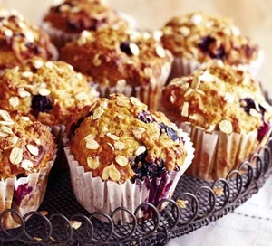

Breakfast Muffin
A quick and easy Breakfast for busy mornings.
Ingredients
- 300g self-raising flour
- 1 tsp bicarbonate of soda
- 100g light muscovado sugar
- 50g porridge oats, plus 1 tbsp for topping
- 2 medium bananas, the riper the better
- 284ml carton buttermilk
- 5 tbsp light olive oil
- 2 egg whites
- 150g punnet blueberries
Steps
- Heat oven to 180C/fan 160C/gas 4 and line a 12-hole muffin tin with paper muffin cases. Tip the flour and bicarbonate of soda into a large bowl. Hold back 1 tbsp of the sugar, then mix the remainder with the flour and 50g oats. Make a well in the centre. In a separate bowl, mash the bananas until nearly smooth. Stir the buttermilk, oil and egg whites into the mashed banana until evenly combined.
- Pour the liquid mixture into the well and stir quickly and sparingly with a wooden spoon. The mix will look lumpy and may have the odd fleck of flour still visible, but don’t be tempted to over-mix. Tip in the blueberries and give it just one more stir. Divide the mix between the muffin cases – they will be quite full – then sprinkle the tops with the final tbsp of the oats and the rest of he sugar. Bake for 18-20 mins until risen and dark golden. Cool for 5 mins in the tray before lifting out onto a rack to cool completely.
Recipe source: www.bbc.co.uk